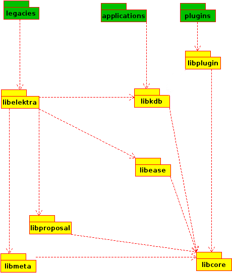

|
Elektra
0.9.6
|
This folder contains the core libraries of Elektra.
Since 0.8.15 this folder contains multiple libraries:

Libelektra is now only a stub for legacy applications. It basically only links all previous libraries together. It should not be used for new applications or plugins.
Contains all sources of Elektra linked to together in one large library. Useful if you do not want dynamically loaded plugins. Should only be used on embedded systems (where whole application stack is done by you) and for tests.
Contains all sources of Elektra linked to together in one large library. Useful if you need your application to be linked statically against Elektra. Should only be used on embedded systems (where whole application stack is done by you) and for tests.
Contains kdb* symbols and applications should link against it.